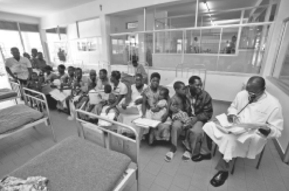

世上的病痛无穷无尽，拯救病患的医疗资源却是有限的。我们怎样决定谁应该得到何种医疗资源？这种两难困境折磨着我们。治疗某人就意味着拒绝治疗另一个人。X被拯救的同时Y却受到惩罚。
医学创新使以上问题变得越发严重。假如今天的医生所拥有的治疗选项还是一百年以前的水平，我们就有合理的机会为每个患者提供治疗。然而，今天我们能做的比一百年以前多得多。医学上每一项新进步都伴随着新的伦理困境。
这些伦理困境具有政治上的轰动效应。各种新的拯救生命和改善生活质量的治疗措施都需要支付高额的费用，只有富人才能享受得起，这合理吗？假如身处公立医疗服务制度下，政府坦率地告诉你：“我们提供基本医疗服务。如果想要尖端医疗服务，你最好去私立医院。”这么说合适吗？或者，政府换一套说辞：“我们没有能力为所有人提供免费的服务，但为了证明我们真的是民主主义者，我们将为一部分患者提供世界一流的前沿治疗措施。”这么说就合适了吗？如果以上假设付诸实践，那么这“一部分”患者包括哪些人？如果国家的责任限于提供基本医疗服务，“基本”的范围有多大？
我们往往用完全西方的，至少是狭隘的民族视角来审视这个问题。如今，每天有大约40000名儿童死于饥饿。
另有数万人死于疟疾或是其他经饮用水传染的疾病。几乎所有这些死亡本来是可以避免的。西方国家几台老年人的心脏移植手术的费用，就足以让以上所有人免受死亡威胁。
要拯救这些人，需要靠谁？不是法官。他们已经很明确地表达了自己的立场。无论在世界何处有人站出来指控医疗资源被非法地使用，总有一股浓浓的司法气息扑鼻而来，随之是一阵彼拉多洗手式 [7] 的喧闹。当法院被迫就他们不介入这些争议给出理由时，法院坚称干预医疗资源分配问题必然会侵犯立法权的范围。如果问题具体化为该将特定治疗提供给A还是B，法院则会说干预具体治疗措施是不合适的，这属于医学专业决定的范畴。
当然，司法也并不总是对立法俯首帖耳。立法决议常常被司法审查叫停或推翻，法院这么做的依据无外乎是宪法或一系列人权原则。在很多司法管辖区，“博勒姆标准”已经消逝或被侵蚀，司法对医学专业决定不再尊让。司法拒绝对诸如是否停止维持生命治疗发表意见的原因，与其说是法律原则，毋宁说是人类对于这类决定的畏难情绪。法官们不希望为此辗转反侧，彻夜难眠。谁能怪罪他们呢？
绝望的诉讼当事人的确会怪罪法官。
很少有人比十岁的“儿童B”的双亲更绝望。她正遭受白血病的折磨。医生对她病情的诊断并不乐观，但仍存在一种成功率20%的治疗方法值得尝试。医疗主管部门拒绝为此支付费用，父母就这一拒绝的决定告到英国上诉法院。
然而，他们败诉了。判决认为，只有主管部门被证明在分配医疗资源时缺乏理据，司法才能介入这一问题［参见“剑桥卫生局诉B案”（1995）］。
该案折射出世界上绝大多数国家面临的状况。
“缺乏理据”是一个很难达到的标准。医疗资助领域绝大多数涉及缺乏理据的诉讼请求，不是对决定所造成后果的直接攻击（这些攻击通常是徒劳的），而是对决策过程的质疑。假设某地的医疗主管部门决定不向变性人的变性手术提供资助，而理由仅仅是主管部门觉得更有必要把钱花在购置肾透析设备而不是手术上，这个决定很可能是无可指摘的。但如果做出同样的决定，主管部门考虑的是出于公共政策，变性不应该受到鼓励，那么结果也许会很不一样。

图7 非洲某地的诊所内坐满了排队等待治疗的患者。无论在哪个国家，医疗需求都远大于医疗资源，这让法律在处理两者关系的问题上陷入困境
差别待遇本身并不一定违法，它源自人的本能。法律只是要求差别待遇应当公开透明，有理有据。例如，在大多数司法管辖区，拒绝给吸烟者实施心脏搭桥手术是合法的，只要相关医疗决定的正当性得到了详细证明。证明过程不会太复杂。吸烟者接受心脏搭桥手术的成功率明显较低。换一种方式来分析（医院会计青睐的实用主义方式），在吸烟者身上投入资源进行手术时，每一块美金所换来的“质量调整寿命年数”比较少。手术的资金投入远大于手术的疗效。
令人惊讶的是，人权立法对医疗资源分配的法律几乎没有影响。有人也许会认为，在《欧洲人权公约》缔约国，第2条（课予国家保护生命权的立法责任）、第3条（禁止非人道或有损人格的待遇）和第8条（广泛地保障个人自主，赋予人们按个人意愿生活的权利）也许可以让医疗资助的决策更适合由法院审理。但事实并非如此。
《欧洲人权公约》第14条禁止歧视的规定看上去能比其他条文发挥更大作用，但很难找出一个案例属于国内法律无法给予救济而必须依赖第14条的。由于公共政策而被拒绝实施手术的变性人可以依据第14条来提出诉讼请求，但为何要如此大费周章？在大多数西方国家，即便没有第14条，这种行为也是缺乏理据的，应当被判定违法。当然，在某些国家情况可能不那么乐观，也许有的国家会支持一项歧视性的公共政策。即便基于第14条的上诉在欧洲人权法院胜诉，这种胜利也是代价不菲的。也许将来，对于拒绝这些手术的理由，这些执迷不悟的国家会不那么坦诚。
前面讨论的主要是政策形成的问题。在个别患者的医疗照护决定中又面临哪些问题呢？
一名处于永久植物状态的患者在病房中由鼻饲管提供营养。如果诊断结果准确，永久植物状态意味着她再也无法感受到活着的意义（尽管她的家人仍从探视中获得慰藉）。继续让她接受维持生命的治疗费用很高。她可能会继续躺上若干年。她的生存意味着很多完全可以被救治的患者死去或残疾。不夸张地说，她就像隔壁病床患者身上的致命寄生虫。隔壁病床的那位拥有4个孩子的35岁母亲所患的癌症本来完全可以治愈，医院却苦于资金短缺而无力采购必要的药品。
可以杀死永久植物状态的“寄生虫”（很多人会认为她实际上已经死亡）来换取隔壁病床母亲的性命吗？也许可以吧。但大多数司法管辖区的法律对于评判人与人之间生命价值的后果小心谨慎，答案往往是否定的。实际上，英国上议院对此做出的判决认为［参见“艾尔代尔国民医疗服务信托诉布兰德案”（1993）］，在决定是否要撤除永久植物状态患者的维持生命治疗措施时，医疗资金分配给其他患者的可能性不得被纳入考虑范围。大多数国家赞成这种看法。
让我们检视这种观点。如果允许医生对具有X症状的患者实施治疗，而不许医生对具有Y症状的患者实施治疗，这种医疗政策是合法的。如果同时面对永久植物状态患者和癌症患者，医生基于临床的理由继续治疗永久植物状态患者而放弃癌症患者是合法的，医生甚至可以告诉癌症患者：“对不起，我们医院的年度预算资金已经用尽，你只能等死。”假如癌症患者在法院上说道：“医院拯救植物人，却让我陷入不幸，这不合理！”她活不了几天，因为法院不会介入。
有些法官不乐见放弃职责的做法。归根结底，法官的天职是作裁决。
他们已经对撤除维持生命治疗措施做出了出色的判决；有时候（例如，涉及连体婴儿分离手术可能导致一生一死的情形），他们也在两个生命之间做出取舍（尽管他们通常会争辩说他们不是在做这样的事，让人难以信服）。医院的拨款委员会必须决定，哪位患者可以接受治疗，哪位患者不能接受治疗。委员会作决定时，并没有像法官那样在专家证人帮助下拥有充分的信息，也没有用高超的司法技艺将争论聚焦在同样的问题上。在决定治疗患者X还是患者Y的过程中，作为个体的医生无疑会将财务因素纳入考量范围，而这恰恰是现行法律要求他们否认的。如果医生可以这么做，为什么法官不可以？如果医生们被鼓励对医疗决定的理由开诚布公，这样不是更好吗？
当然，问题不仅仅在于司法缺乏能动性或是专业知识。问题也不在于，很难发展出一整套实体法律来应对这个问题。真正的问题是防洪闸这个老问题。如果挑战医疗费用决定的诉讼太容易被提出，法院就会挤满求取费用的患者和患者家属。在很多情形下，实在法是由现实考虑塑造的：医疗资源的分配就是一个经典的例子。